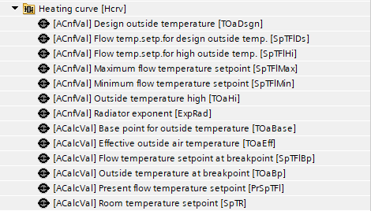
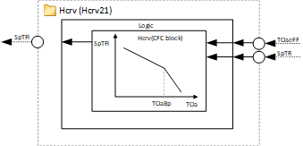
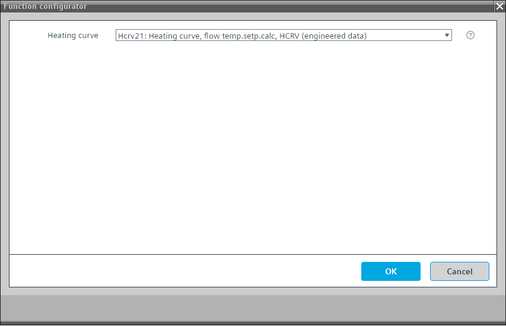

[Hcrv21] Heating curve, flow temperature setpoint calculation, with HCRV
Program block, name / node subtype: [Hcrv21] Heating curve, flow temperature setpoint calculation, with HCRV
Library hierarchy: Heating functions
Family: Hcrv
Project tree | Diagram |
|---|---|
|
 |  |
Configurator


Program blocks are stored in the library without I/Os. Use the auto-create and auto-connect functions to create I/Os and/or to connect them to the interface blocks, e.g., R_A, CMD_B. Alternatively, take the I/Os from the folder containing the predefined I/Os in the library and/or from the plant and connect them to the interface blocks.
Function
Calculates the setpoint for the flow temperature based on a heating curve.
It uses the function block HVAC and value objects for showing its values on BACnet.
You must set:
- two values for the outside temperature
- two corresponding flow temperature setpoints
- one radiator exponent
There are configuration values for the minimum and the maximum flow temperature setpoints.
Mandatory elements
Name | Description | Types | Alarm / Notification class | Trend / Type | |
|---|---|---|---|---|---|
|
TOaDsgn | Design outside temperature | ACnfVal: Analog configuration value | N/A | No | |
SpTFlDs | Flow temperature setpoint for design outside temperature | ACnfVal: Analog configuration value | N/A | No | |
SpTFlHi | Flow temperature setpoint for high outside temperature | ACnfVal: Analog configuration value | N/A | No | |
SpTFlMax | Maximum flow temperature setpoint | ACnfVal: Analog configuration value | N/A | No | |
SpTFlMin | Minimum flow temperature setpoint | ACnfVal: Analog configuration value | N/A | No | |
TOaHi | Outside temperature high | ACnfVal: Analog configuration value | N/A | No | |
ExpRad | Radiator exponent | ACnfVal: Analog configuration value | N/A | No | |
TOaBase | Base point for outside temperature | ACalcVal: Analog calculated value | No | No | |
TOaEff | Effective outside air temperature | ACalcVal: Analog calculated value | No | No | |
SpTFlBp | Flow temperature setpoint at breakpoint | ACalcVal: Analog calculated value | No | No | |
TOaBp | Outside temperature at breakpoint | ACalcVal: Analog calculated value | No | No | |
PrSpTFl | Present flow temperature setpoint | ACalcVal: Analog calculated value | No | No | |
SpTR | Room temperature setpoint | ACalcVal: Analog calculated value | No | No | |